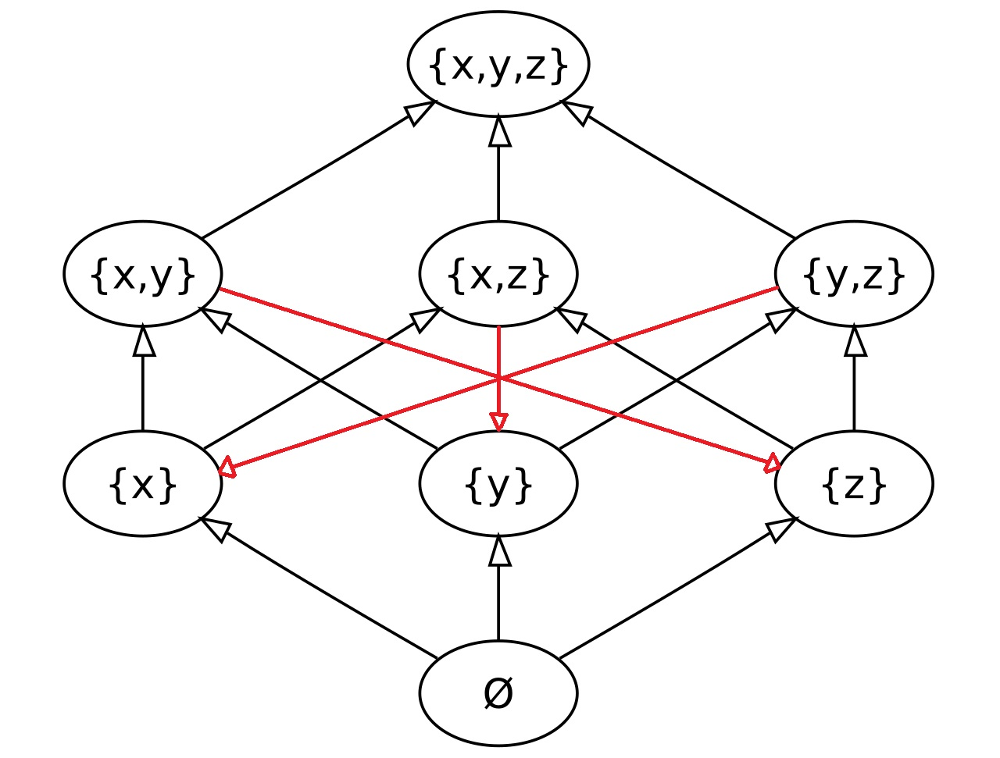

Диаграммы импликаций
Постановка задачи
Дано множество утверждений. Между некоторыми из них установлены логические импликации (одно утверждение влечёт другое). Доказанные импликации — это те, для которых мы установили логический вывод. Опровергнутые импликации — это те, для которых предъявлен контрпример.
Вопрос: как выглядит минимальный набор импликаций (доказанных и опровергнутых), из которого можно логически вывести или опровергнуть все остальные?
Задача относится к изучению порядков и предпорядков, так как любое множество утверждений образует предпорядок относительно импликации, а если нет эквивалентных, то просто порядок.
Диаграммы Хассе и запирающие отношения
Для доказанных импликаций это по сути хорошо известное понятие диаграммы Хассе, для опровергнутых импликаций это менее изучено, я назвал это запирающим отношением.
Запирающее отношение можно опредлеить следующим образом: пусть \( \leq \) предпорядок, тогда отношение \( B \) запирающее, если оно лежит в дополнении \( \leq \) и для любых \( a, b\), таких, что \( a \nleq b \), \( Tr(\leq \cup \{ (a, b) \}) \cap B \neq \emptyset \). \( Tr\) обозначате транзитивное замыкание. Интуитивно: если мы попытаемся добавить ещё одну импликацию, то наткнёмся на что-то из запирающего множества.

Нижняя граница для размера запирающего отношения в порядках.
Теорема: для порядков (то есть когда нет эквивалентных утверждений) наименьший размер запирающего отношения из \( n \) элеметов равен \( \lceil log_2 n \rceil \)
Доказательство:Пусть \( A \) — множество из \( n \) элеметнов и \( \leq \) порядок на нём. Можно показать, что любое запирающее отношение \( B\) обладает следующим свойством: если \( a \nleq b \), то существует пара \( (x, y)\) из \( B\), такая что \( x \leq a \) и \( b \leq y \) (потому что какая-то из стрелок \( (x, y)\) должна получаться композицией \( (a, b)\) и стрелок исходного порядка).
Теперь мы можем доказать нижнюю границу: \( A \) вкладывается в множество всех подмножеств \( B \). Сопоставим каждому \( a \in A \) множество \( \{ (x, y) \in B | x \leq a \} \).
Докажем инъективность. Пусть у разных \( a \) и \( b \) эти множества совпадают. Без потери общности можно предположить \( a \nleq b \), тогда существует пара \( (x, y)\) из \( B\), такая что \( x \leq a \) и \( b \leq y \), но тогда \( x \leq b \) и \( b \leq y \), поэтому \( x \leq y \), но это противоречит тому, что эта пара лежит в \( B \). Отсюда и получаем границу: \( |A| \leq 2^{|B|} \). Граница достигается для множества всех подмножеств, упорядоченного по включению, как на иллюстрации выше.
Основные результаты исследования
- Нижняя граница: доказана оценка минимального размера запирающего отношения для случайного набора импликаций.
- Аналог чисел Рамсея:, измеряющий, насколько сложно доказать полную структуру импликаций.
- Теорема существования: доказано, что для любого конечного набора неэквивалентных утверждений существует как диаграмма Хассе (для доказанных), так и наименьшее запирающее отношение (для опровергнутых). В бесконечном случае это не всегда так, но любой порядок может быть вложен в другой порядок, имеющий и диаграмму Хассе и наименьшее запирающее отношение.